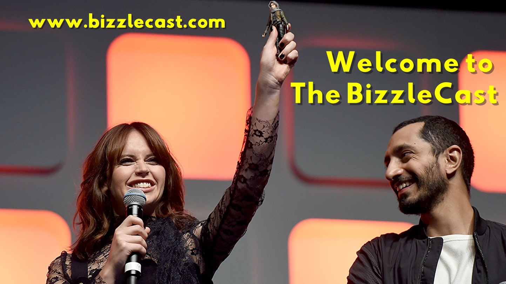

Want to launch a podcast and have someone else take care of the technical stuff? Create a #1 podcast and have B/Cast Studios take care of your audio-video production without worrying about the technical stuff!

The BizzleCast podcast has been going strong for over seven years, with over 300 produced podcasts and raking in 100,000 listens and downloads. We had recurring guests and co-hosts from over half a dozen countries, and got to appear on some other of our favorite podcasts!
And while topics have ranged from nerd properties on film & TV to politics to sports to music and beyond, the one thing that has never changed is top-level production values, whether our contributors are in-studio or as far away as Australia.
MODIBA Productions, LLC is an artist management, album production + music licensing company based in Brooklyn, NY, dedicated to international artists + social responsibility. Co-founded in 2004, alive and stronger than ever today.
MODIBA also provides comprehensive music licensing solutions to the media industries, specializing in international artists and genres from every corner of the globe for our clients in the film, television and advertising realms.
Short answer: no! Whatever audio-video-streaming needs you have, we here at BCast Workshop are up to the task. Have a three-person podcast from three different locales? Want to stream it live and then immediately make available on demand? How about adding some live video as well to expand your audience base? We offer all this and more, each client is personally tailored for depending on needs, budget, timetables, etc.
You may be asking yourself: How do I get started?
Easy! Just get in touch and we'll run through a quick but comprehensive survey of all the services you think you might need and how the BCast Workshop can provide for them in the most efficacious, afffordable, timely, and professional way possible.
- Professional-Grade Recording, Production, and Post-Production at all levels of media;
- Extensive Experience and Know-how from Day One;
- And we use only the best audio and video hardware and software to make our products as perfect as possible.
We here at B/Cast offer professional-grade and rapid delivery of both live streaming AND on-demand Podcasts, Vidcasts, Twitch Streams, and more!
From there — the sky is the limit!
Yup, that's me: Jesse F. Brenner
aka "The Bizzle"
I've been working in all areas of audio and video creation since founding MODIBA in 2004... But really since my parents got me an Apple IIGS at age 7. (Thanks Mom and Dad!)